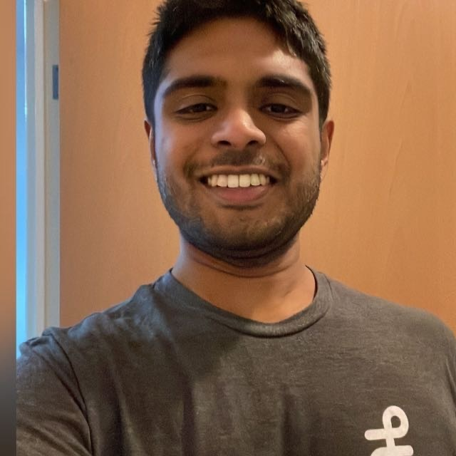
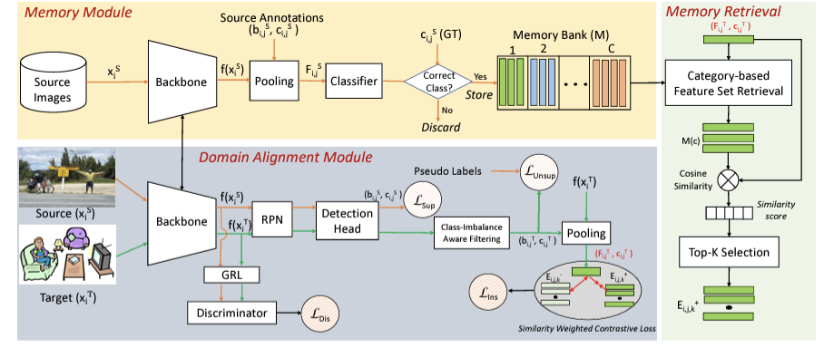
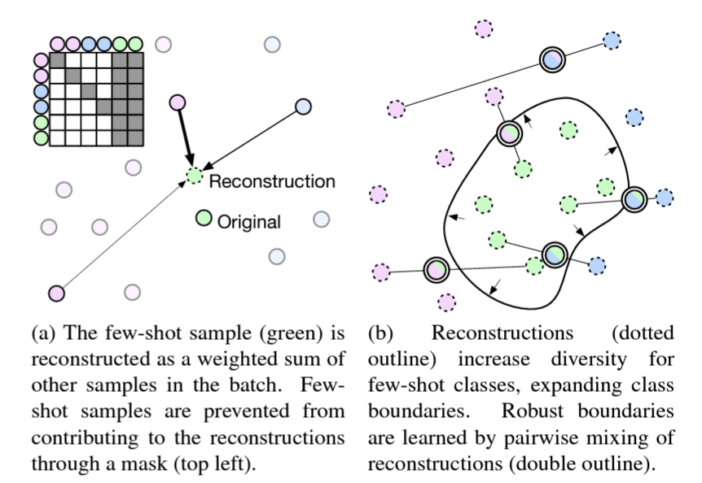
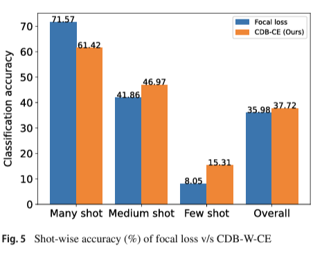
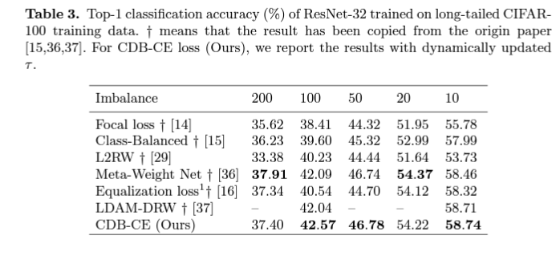
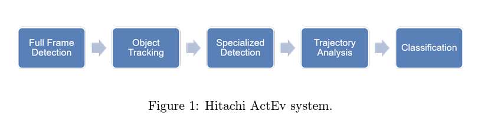

Saptarshi Sinha
I am currently a Ph.D. student working with Prof. Dima Damen at the School of Computer Science, University of Bristol. I am part of MaVi and ViLab. I was previously a computer vision researcher at Hitachi Research and Development, Japan. My research interest lies in computer vision, focusing primarily on long-term video understanding. I completed my Masters from IIT Bombay under the supervision of Prof. Subhasis Chaudhuri.
Activities
- August 2023 - Paper accepted at BMVC 2023. Our paper "MILA: Memory-Based Instance-Level Adaptation for Cross-Domain Object Detection" got accepted in BMVC. More information here.
- June 2023 - Attended and presented at CVPR, Vancouver. It was an honour presenting at CVPR and meeting new people. More information and photos here.
- February 2023 - Paper accepted at CVPR 2023. Our paper "Use Your Head: Improving Long-Tail Video Recognition" got accepted in CVPR. More information here.
- September 2022 - Started as Ph.D. at University of Bristol.
- August 2022 - Paper accepted at WACV 2023. Our paper "Difficulty-Net: Learning to Predict Difficulties for Long-Tailed Recognition" got accepted in Round-1 of WACV. More information here.
- August 2022 - Published in IJCV. Our paper "Class-difficulty based methods for long-tailed visual recognition" got published in IJCV. More information (here).
- April 2021 - Co-organised MMAct Challenge in conjunction with ActivityNet@CVPR2021 - Cross-modal video action recognition/localisation challenges on the MMAct dataset. Find more information here.
- November 2020 - Presented at ACCV 2020. - Nice experience presenting my first international paper.
- September 2020 - Paper Accepted at ACCV 2020. My first paper. - Our paper titled "Class-wise difficulty-balanced loss for solving class-imbalance" was accepted at ACCV 2020. See more here.
- October 2019 - Attended ICCV, Korea.
- August 2019 - Paper published at IEICE Conferences. You can find the paper here.
- September 2018 - Started as a researcher at Hitachi R&D, Japan. Supervised by Hiroki Ohashi and Katsuyuki Nakamura
Publications
|  |
MILA: memory-based instance-level adaptation for cross-domain object detection
Onkar Krishna, Hiroki Ohashi, Saptarshi Sinha British Machine Vision Conference (BMVC), 2023 [arXiv] [code] |
 |
Use your head: Improving long-tail video recognition
Toby Perrett, Saptarshi Sinha, Tilo Burghardt, Majid Mirmehdi, Dima Damen IEEE/CVF Conference on Computer Vision and Pattern Recognition (CVPR), 2023 [arXiv] [code] [page] |

|
Difficulty-Net: Learning to Predict Difficulty for Long-Tailed Recognition
Saptarshi Sinha, Hiroki Ohashi IEEE/CVF Winter Conference on Applications of Computer Vision (WACV), 2023 [arXiv] [code] |
 |
Class-difficulty based methods for long-tailed visual recognition
Saptarshi Sinha, Hiroki Ohashi, Katsuyuki Nakamura International Journal of Computer Vision (IJCV), 2022 [arXiv] [code] |
|  |
Class-wise difficulty-balanced loss for solving class-imbalance
Saptarshi Sinha, Hiroki Ohashi, Katsuyuki Nakamura Asian Conference on Computer Vision (ACCV), 2020 [arXiv] [code] |
 |
NII Hitachi UIT at TRECVID 2019
Martin Klinkigt, Duy-Dinh Le, Atsushi Hiroike, Hung-Quoc Vo, Mohit Chabra, Vu-Minh-Hieu Dang, Quan Kong, Vinh-Tiep Nguyen, Tomokazu Murakami, Tien-Van Do 0002, Tomoaki Yoshinaga, Duy-Nhat Nguyen, Sinha Saptarshi, Thanh-Duc Ngo, Charles Limasanches, Tushar Agrawal, Jian Vora, Manikandan Ravikiran, Zheng Wang, Shin'ichi Satoh TRECVID, 2019 [OpenReview] |